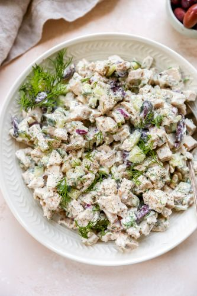

What's Cookin' Friend!
Need a quick, healthy and easy meal? Check out the recipes below. I guarantee you will want to make these recipes over and over again. Not to mention you can leave the table feeling full and happy!

Cucumber and Grilled Chicken Salad
Ingredients
- 2 English cucumbers (chopped)
- 1/3 cup of sliced red onion
- 1/2 cup of Greek yogurt
- 1/2 cup of cottage cheese
- 1 tablespoon of fresh dill chopped
- a squeeze of fresh lemon juice
- 1/4 cup of fresh garlic
- salt and pepper to taste
- 1 package of chicken breast strips
- Perfect Pinch Lemon & Pepper seasoning (for the chicken)
- Kinder's Roast Chicken with Garlic and Herbs (for the chicken)
- 1 tbsp of Avocado oil
Directions
Prepare the chicken
- Evenly coat each side of the chicken breast strips with your Perfect Pinch Lemon & Pepper and Kinder Roast chicken seasoning.
- Heat a large skillet with 1 tbsp of oil over medium heat. Once hot, add a single layer of chicken tenders to the pan. DO NOT OVERCROWD. Let each side cook for 3 to 5 minutes on each side.
- Once tenders are cooked, remove from pan and set aside.
In a large bowl with a top, combine your chopped cucumbers, red onion, Greek yogurt, cottage cheese, lemon juice, garlic and fresh dill together.
Chop the chicken strips into bite size pieces and add to the bowl.
Then shake or stir all of the ingredients until everything is evenly coated. Add salt and pepper to taste.
Mandisa's Tip
This tasty simple meal would be a good choice for a nice summer day. Pair with your favorite fruits or fruit salad. ENJOY!